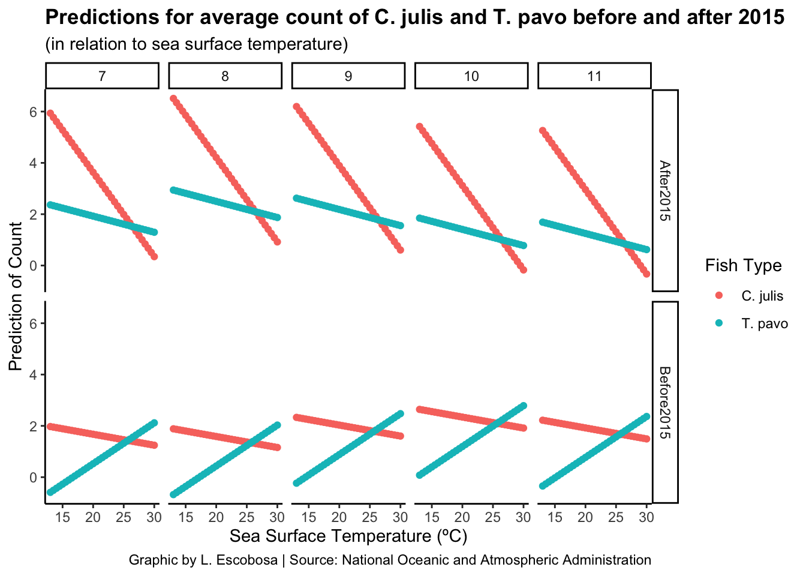
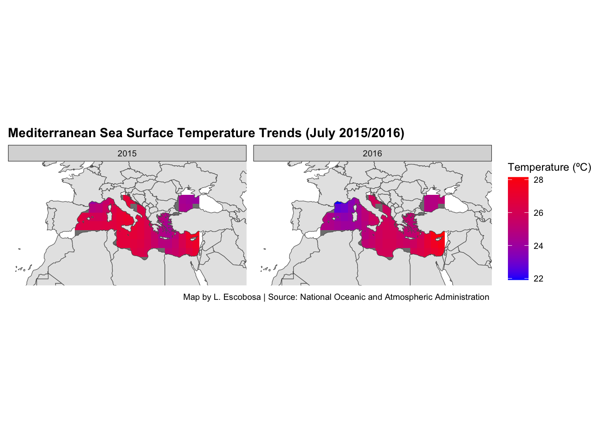

Mediterranean wrasses are a bright-colored fish species belonging to the Labridae family. Most wrasses inhabit the tropical and subtropical waters of the Atlantic, Pacific, and Indian oceans. Wrasses are usually found in shallow-water habitats such as coral reefs and rocky shores.
Image Caption:Two types of Mediterranean wrasses: Coris julis (top) and Thalassoma pavo (bottom), Source: Science Direct Article
Why the Mediterranean Sea?
To understand how climate change affects population dynamics in marine biological systems, we focus on temperature fluctuations in the Mediterranean Sea. Scientific literature and conducted studies propose that global warming can induce organisms to adapt or move to track thermal optima, ultimately resulting in spatio-temporal changes (Milazzo et al., 2016). The Mediterranean Sea has sensibly warmed over the past three decades, with an average 0.03°C/year increase in the Western basin and a 0.05°C/year increase in the Eastern basin (Milazzo et al., 2016). The sped up rate at which temperature in the Mediterranean rises makes it an interesting case study.
What fish species?
In this project, we explore the patterns of distribution and abundance of two ecologically similar species: the rainbow wrasse Coris julis and the ornate wrasse Thalassoma pavo. The Coris julis is a cool-water species common in shallow algal beds along the northern coast of the Mediterranean, while the ornate wrasse is a thermophilic species more abundant along the southern coast. Selection of these particular species stems from previous findings that in warmer conditions, the ‘cool water’ species is competitively displaced from preferred algal habitat to seagrass habitat because of the rising temperatures. Thus, observing changes in distribution and abundance of these two species provides a unique opportunity to exlore temperature-dependent interspecific interactions in the animal kingdom and to understand how future climate conditions can result in a readjustment of habitat occupancy and species competition.
Data, Visualization, and Results
For this project, we observe distribution and abundance patterns using spatio-temporal data. In an attempt to understand the relationship between wrasse distrubution/abundance and sea surface temperatures, two different data sets are joined and spatially overlapped. Data was obtained from the Sea Scientifc Open Data Publication and the National Oceanic and Atmospheric Administration.
In order to join the two data sets, each data set was cleaned by scaling variables, removing decimal points when appropriate and overlapping both data sets on a range of longitude and latitude points covering the Mediterranean Sea.
The Poisson Model: Modeling fish predictions
In order to understand the impacts of rising SST on wrasse distribution, a poisson model was fit. The poisson model is a discrete probability distribution that expresses the probability of a given number of events occurring in a fixed interval of time or space. For our model, we attempt to predict the most likely distribution and abundance (count) of both Coris julis and Thalassoma Pavo in the Mediterranean Sea. As our selected interval of time, we picked two years: August 2015 and August 2016. These years were selected because they fit into the category of years affected very strongly by El Niño according to the Oceanic Niño Index (ONI) (ONI categories).
The following visualization shows the modeled predictions for abundance (count) of both Coris julis and Thalassoma pavo in relation to sea surface temperature (°C) for the months of August-November before and after 2015.The graph shows how, before 2015, there was positive correlation between Thalassoma pavo counts and SST. Coris julis count, on the other hand, had a tendency to decrease as SST increased. After 2015, both Thalassoma pavo and Coris julis counts significantly decreased as SST increased.
Code
NewDat %>%ggplot(aes(x = sst, y = Pred, color = FishType)) +geom_point() +facet_grid(TimePeriod~Month) +labs(title ="Predictions for average count of C. julis and T. pavo before and after 2015",subtitle ="(in relation to sea surface temperature)",caption ="Graphic by L. Escobosa-Alcantar | Source: National Oceanic and Atmospheric Administration",x ="Sea Surface Temperature",y ="Prediction of Count") +theme_classic() +theme(plot.title =element_text(face ="bold"))

Maps: How do abundance and distribution predictions look like?
The following maps compare sea surface temperature trends in the Mediterranean Sea in July 2015 and July 2016. The range of temperatures depends on the average sea surface temperatures recorded in the Mediterranean throughout the years.
Code
tmp <- medSeaTemp %>%filter(year %in%c(2015,2016),month ==7) ggplot() +geom_tile(data = tmp, aes(x = lon,y = lat , fill = sst),width =2,height=2) +geom_sf(data = world_sf) +coord_sf(xlim =c(-17.14,45.44), ylim =c(25.80, 51.29)) +scale_fill_gradient(low='blue',high='red') +facet_grid(.~year) +labs(fill ='Temperature', title ='Mediterranean Sea Surface Temperature Trends (July 2015/2016)', caption ="Graphic by L. Escobosa-Alcantar | Source: National Oceanic and Atmospheric Administration ") + ggthemes::theme_map() +theme(panel.spacing =unit(0.2, "cm"), legend.position ='right',plot.title =element_text(face ="bold"))

The following grid of maps shows the spatial distribution and abundance of Coris julis and Thalassoma pavo in the Mediterranean Sea for the years 2015 and 2016. The maps show how,Coris julis populations have a tendency to congregate in the colder regions of the Mediterranean. The distribution and abundance of Thalassoma pavo is pretty uniform across the map, reinforcing the species’s thermophilic attributes.
Code
world <-get_stamenmap(bbox =c(left =-17.14, bottom =25.80, right =45.44, top =51.29),maptype ="toner",zoom =6 )world_sf <-ne_countries(scale ='medium',returnclass ='sf')tmp2 <- medSeaTemp %>%filter(year %in%c(2015,2016),month ==7) %>% dplyr::rename(Year = year, Month = month) tmp2 <- tmp2 %>%mutate(FishType ='Coris_julis') %>%bind_rows(tmp2 %>%mutate(FishType ='Thalassoma_pavo'))tmp2 <- tmp2 %>%mutate(pred =predict(fish_mod2,newdata = tmp2 ,type='response')) %>%filter(!is.na(pred))ggplot() +geom_tile(data = tmp2, aes(x = lon,y = lat , fill = pred),width =2,height=2) +geom_sf(data = world_sf) +coord_sf(xlim =c(-17.14,45.44), ylim =c(25.80, 51.29)) +scale_fill_gradient(low='white',high='green') +facet_grid(FishType~Year) +labs(fill ='Predict Fish Count', title ='Predicted count and distribution of C. julis and T. pavo in the Mediterranean Sea (July 2015/2016) ',caption ="Graphic by L. Escobosa-Alcantar | Source: National Oceanic and Atmospheric Administration ") + ggthemes::theme_map() +theme(panel.spacing =unit(0.3, "cm"), legend.position='right',plot.title =element_text(face ="bold"))